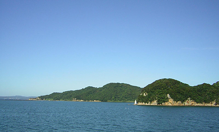
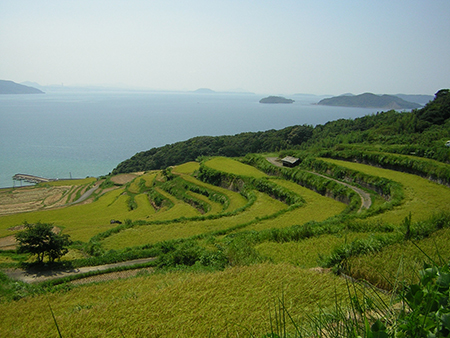

Matsuura
You may not have visited Matsuura but you can be sure that Matsuura has visited you. Your hair dryer will testify. Your toaster will testify. And that superfluous little motor in your desk’s electric pencil sharpener will testify too. For Matsuura is the power capital of Nagasaki. Every day Matsuura generates gigantic tubs full of the stuff so energy can be pumped straight through the power lines and into the blood lines of your favorite electronic goods. So come visit. You owe it to toasted sandwiches and conveniently sharpened pencils everywhere. Oh, and Matsuura’s a pretty neat place too.
Despite the existence of the power plant, which stands gloomy and monolithic at the coast’s edge, Matsuura’s main town Shisa is a considerably beautiful area, consisting of mountains, layered rice fields, a wide green valley, a gushing river and a meager town lined excessively with preened pine trees. A great view of this can be seen from the peak of Mt. Furou, where one can also enjoy the splashing delights of the water slide and a park crammed full of azalea bushes. Needless to say the best time to visit is in May, when the park bursts into bloom with thousands of pink flowers, giving Matsuura an excuse to break out the rainbow flags and don its festival hat. If you are in Shisa you definitely ought to make a stop at the quirky Hot Hot Café and order its reknowned ‘dry curry’ – a delicious fluffy egg concoction infused with curry and served in a frying pan with cat-themed spoons. It would be wise to follow this up with a heaped plate of choux-creams, which the lovely café owners will happily serve to you with non-judging smiles and the friendliest of conversation.
Takashima is a place which should be visited because of its sheer legendary connection: during the 13th century a fleet of Mongolian ships headed towards this island in an attempt to invade Japan, but was unsuccessful due to a ferocious storm. Japanese people everywhere heralded this bout of turbulent Mongol-whooping weather as a divine wind, and thus the word kamikaze was coined. Takashima has erected a Mongolian village near the site of shipwreck in historical homage and undoubtedly smug mockery to this failed colonial mission. Here you and your friends can rent Mongolian-style huts, bathe in a Mongolian-style spa and re-enact your very own Mongolian-style invasion.
Fukushima is the island next door and offers grand landscapes for you to gasp at and admire. The island’s terraced rice fields are extensive, and cascade along tall mountainous slopes right down to where the land meets the sea. Green waves of rice crops roll hypnotically in the wind and hawks and cranes swoop dramatically in territorial delight. This scene attracts many eager photographers, and for good reason too, especially when the fields are muddied and flooded and glisten magnificently underneath the glow of a setting sun.
{kind=link}
If you are relying on public transport Matsuura is best reached by bus from Sasebo, and explored by the Matsuura Rail train, although do note that the MR is a tediously slow service that insists in stopping at every cluster of houses along the northern Nagasaki coast. If you have the time and the patience, however, then the train ride is beautiful, particularly between Shisa and Imari where you can be treated to views of distant misty islands, crashing waves, rocky cliffs and secret one-person beaches. Takashima and Fukushima are connected to the (Saga) mainland by bridge, and can also be accessed by ferry. Just makes sure you don’t have megalomaniacal tendencies and visit on a day when God is feeling particularly huffy and wrathful.
{kind=link}
-Rachael Chong